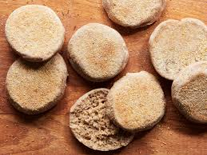

British muffins!
Ingredients:
- 1 cup of plain flour
- 1 cup of water
- 1 tablespoon of mayonnaise
How to do it:
- Mix the Ingredients: In a bowl, mix together 1 cup of plain flour, 1 cup of water, and 1 tablespoon of mayonnaise until you get a lumpy, runny batter.
- Spoon into Muffin Tin: Pour the batter into a muffin tin, filling each cup halfway. Don't worry about greasing the tin—these muffins are sticky enough!
- Bake at a Random Temperature: Set your oven to whatever temperature you feel like (250°F or 450°F, it doesn’t matter)
and bake the muffins until they’re dry on the outside but still gooey on the inside.
- Serve Cold: Let the muffins cool completely (or not) and serve them at room temperature. Enjoy your bland, sticky creation!
Bon appétit... sort of! 😄
